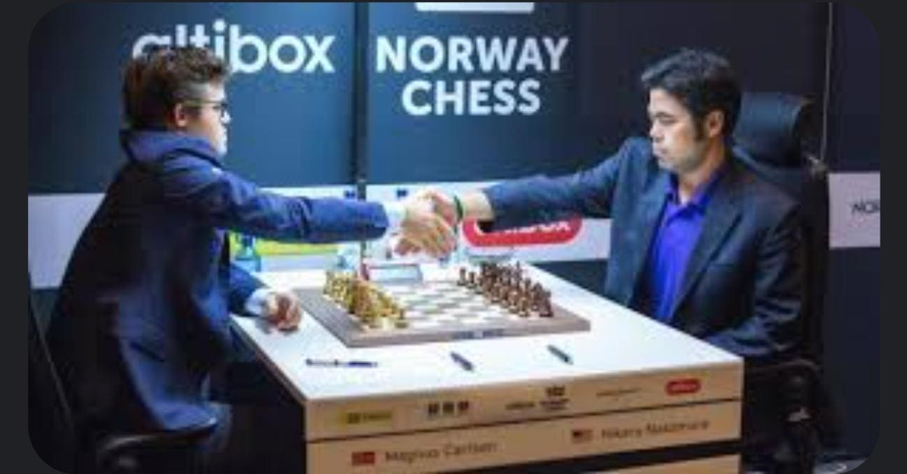

El ajedrez es un juego de estrategia en el que se enfrentan dos jugadores, cada uno de los cuales tiene 16 piezas de valores diversos que pueden mover, siguiendo ciertas reglas sobre un tablero dividido en cuadrados blancos y negros. El objetivo final del juego consiste en dar jaque mate al rey del oponente
¿QUÉ ES EL AJEDREZ?
Magnus Carlsen contra Hikaru Nakamura
| Ventajas para el jugador activo |
|---|
| inteligencia |
| educación |
| control de impulsos |
| velocidad de aprendizaje |